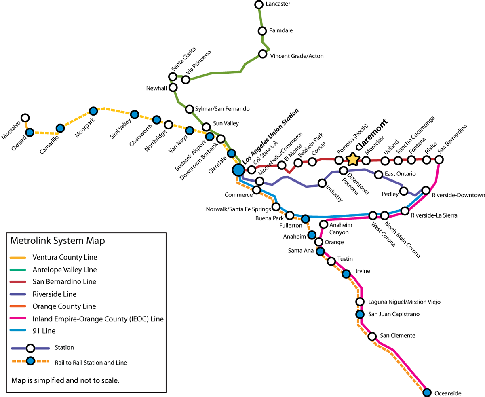

The R. Michael Shanahan Center for Teaching and Learning at Harvey Mudd.
The conference will be spread across the three colleges of Harvey Mudd, Pomona, and Cal Poly Pomona, situated about 35 miles east of Los Angeles. Attendees will spend one day at each institution, beginning with Friday at Harvey Mudd, Saturday at Pomona, and finishing up on Sunday at Cal Poly Pomona.
Participants will be lodged at the DoubleTree Hotel in Claremont, detailed under Accommodation. Shuttles will take students to and from the hotel to Cal Poly Pomona on Sunday. We encourage local participants to travel to Claremont by car, bus, Metrolink, or train.
Carpooling is strongly encouraged. We will provide a list of all registered students, emails, and institutions after registration closes to help facilitate this process. Our Facebook is also available to help you connect with other conference participants. We advise attendees who are driving to first check in at DoubleTree, where parking is readily available in the hotel lot. DoubleTree's address is as follows:
DoubleTree by HiltonInformation about buses here. Information about buses here. Buses buses buses. Information about buses here. List of nearby bus stops and numbers of buses that go there:
The Metrolink station in Claremont is a few blocks from the colleges and the DoubleTree Hotel. Information for buying metrolink tickets here. Take the San Bernardino line east from Union Station in Los Angeles, or west from San Bernardino. You can refer to the Metrolink map below (Claremont station is emphasized) to plan your route or visit the Metrolink website directly.
the map to view it full-sized.
Information about trains here. Information about trains here. Trains trains trains. Information about trains here. Information about trains here. Information about trains here. Trains trains trains. Information about trains here. Information about trains here. Information about trains here. Trains trains trains. Information about trains here.
Attendees from greater distances may need to fly. Directions for how to approve a flight or the like. The nearest airports are Ontario International Airport and Los Angeles International Airport. Additional instructions after arriving at airports. Additional instructions after arriving at airports. Additional instructions after arriving at airports.
The DoubleTree Hotel has ample onsite parking in its hotel lot.
Where to park at Harvey Mudd. How to get to said parking location. How to get from parking location to conference location.
Where to park at Pomona. How to get to said parking location. How to get from parking location to conference location.
Where to park at Cal Poly Pomona. How to get to said parking location. How to get from parking location to conference location.
Conference lodging will be provided at the DoubleTree Hotel in Claremont, a short walk from Harvey Mudd College, Pomona College, and the downtown Claremont Village. What kind of rooms, how many to a room, what kind of beds. You may bring a sleeping bag and mat if you do not wish to share a bed. About roommate requests.
Upon arrival at DoubleTree, please have your photo ID available to check in at the front desk. No additional purchases may be charged to the room; a personal credit card must be used.
Meals, snacks, and coffee breaks will be provided to all participants. You will be able to note any dietary restrictions when completing registration, however if you still have concerns, please contact us at that time.
{kind=link}